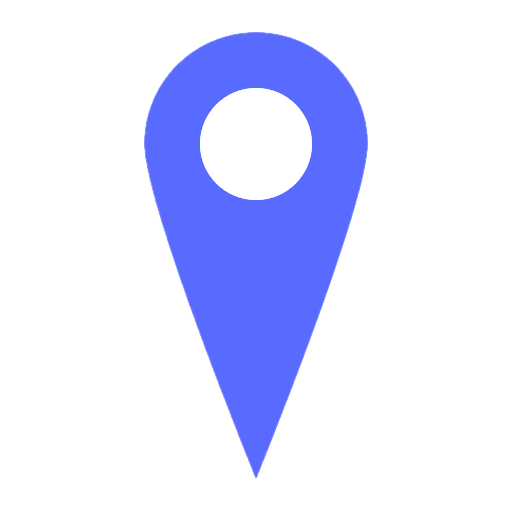
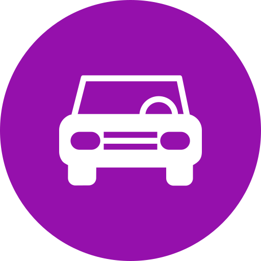
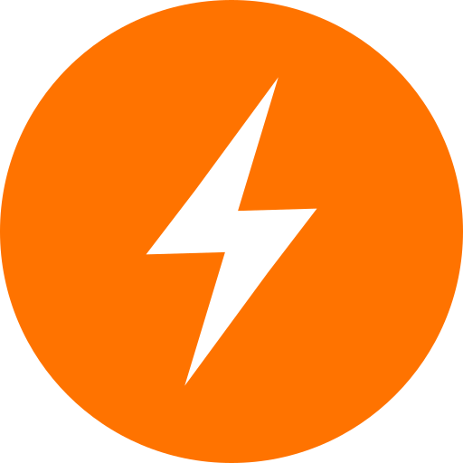
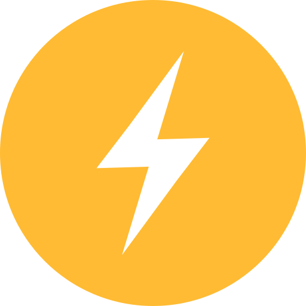
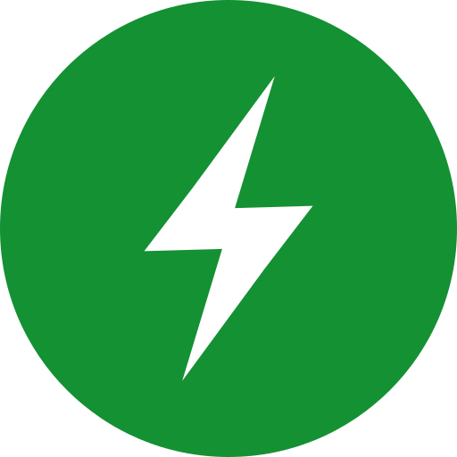
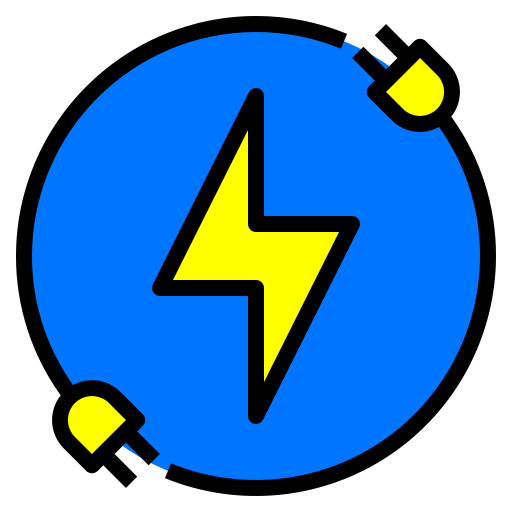
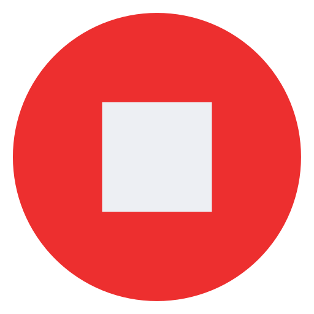

<!DOCTYPE html>
<html lang="fr">
<head>
  <meta charset="UTF-8" />
  <title>Nono Maps</title>
  <meta name="viewport" content="width=device-width, initial-scale=1, viewport-fit=cover" />
 <link rel="stylesheet" href="https://unpkg.com/leaflet@1.9.4/dist/leaflet.css" crossorigin=""/>
<link rel="stylesheet" href="https://unpkg.com/leaflet.markercluster/dist/MarkerCluster.css" />
<link rel="stylesheet" href="https://unpkg.com/leaflet.markercluster/dist/MarkerCluster.Default.css" />

<script src="https://unpkg.com/leaflet@1.9.4/dist/leaflet.js" crossorigin=""></script>
<script src="https://unpkg.com/leaflet.markercluster/dist/leaflet.markercluster.js"></script>
  <style>

.btn-return {
  position: relative;
  animation: pulseHalo 1.8s infinite;
}

@keyframes pulseHalo {
  0%   { box-shadow: 0 0 0px rgba(255,255,255,0.6); }
  50%  { box-shadow: 0 0 15px rgba(255,255,255,0.9), 0 0 30px rgba(255,255,255,0.4); }
  100% { box-shadow: 0 0 0px rgba(255,255,255,0.6); }
}
  
    .icon-halo {
  width: 48px;   /* 👈 adapte la taille ici */
  height: 48px;
  filter: drop-shadow(0 0 2px white) drop-shadow(0 0 4px white);
}
    .icon-halo-appareil {
  width: 24px;   /* 👈 taille réduite seulement pour les appareils */
  height: 24px;
  filter: drop-shadow(0 0 4px white) drop-shadow(0 0 8px white);
}
    
.icon-wrapper {
  display: inline-block;
  border-radius: 50%;          /* halo arrondi */
  padding: 4px;                /* espace autour */
  background: white;           /* halo blanc */
  box-shadow: 0 0 6px rgba(0,0,0,0.4); /* ombre discrète */
}

.icon-wrapper img {
  width: 44px;
  height: 44px;
  display: block;
}
/* === CLUSTERS LIQUID GLASS iOS === */
.marker-cluster {
  background: transparent !important; /* pas de fond autour */
  border-radius: 50%;
}

.marker-cluster div {
  width: 42px;
  height: 42px;
  border-radius: 50%;
  display: flex;
  align-items: center;
  justify-content: center;
  font-family: -apple-system, BlinkMacSystemFont, "Segoe UI", Roboto, Inter, sans-serif;
  font-weight: 600;
  font-size: 14px;
  color: #ffffff;
  text-shadow: 0 0 3px rgba(0,0,0,0.8), 0 0 6px rgba(0,0,0,0.6); /* contour autour des chiffres */
  background: rgba(255, 255, 255, 0.15);   /* bulle translucide claire */
  backdrop-filter: blur(10px);             
  -webkit-backdrop-filter: blur(10px);
  border: 1px solid rgba(255,255,255,0.25);
  box-shadow: 0 6px 18px rgba(0,0,0,0.2);
  transition: transform 0.25s ease, background 0.3s ease;
}

/* Survol / tap → bulle légèrement plus claire et grossit */
.marker-cluster:hover div {
  transform: scale(1.12);
  background: rgba(255, 255, 255, 0.25);
}

    .control-group {
  margin-bottom: 10px; /* espace entre localisation et filtres */
}
    .control-group + .control-group {
  margin-top: 45px; /* espace entre le groupe haut et le groupe bas */
}
    
#version-label {
  position: fixed;
  bottom: 6px;
  left: 8px;    /* 👈 affichage à gauche */
  font-size: 11px;
  color: rgba(255,255,255,0.45);
  font-family: system-ui, sans-serif;
  pointer-events: none;
  user-select: none;
}
    /* Boutons ronds à gauche (ON = blanc, OFF = noir translucide) */
.btn-toggle{
  background: rgba(0,0,0,.7);
  border: 1px solid rgba(255,255,255,.12);
  border-radius: 50%;
  width: 44px; height: 44px;          /* taille identique */
  display: flex; align-items: center; justify-content: center;
  font-size: 20px;                    /* emoji inchangé */
  color: #fff;
  cursor: pointer;
  margin: 10px 5px;                   /* ↑ plus d’espace vertical */
  box-shadow: 0 4px 12px rgba(0,0,0,.25);
  user-select: none;
  line-height: 1;
  -webkit-tap-highlight-color: transparent;
  touch-action: manipulation;
}
.btn-toggle.active {
  background: #fff;
  color: #111;
}
    
    :root { --accent:#4f46e5; --bg:#0b0c0e; --ink:#f9fafb; --glass:rgba(17,19,23,.65); --border:rgba(255,255,255,.12); }
    html, body { height:100%; margin:0; font-family:-apple-system,BlinkMacSystemFont,"Segoe UI",Roboto,Inter,sans-serif; background:var(--bg); color:var(--ink); }
    #map { width:100%; height:100%; }

    .icon-circle { width:26px; height:26px; border-radius:50%; display:flex; align-items:center; justify-content:center; color:white; font-size:15px; font-weight:bold; }
    .poste { background:#e11d48; } .appareil { background:#facc15; } .acces { background:#3b82f6; }
   .leaflet-control-custom{
  background: rgba(0,0,0,0.7);
  border: 1px solid rgba(255,255,255,.12);
  border-radius: 50%;
  width: 44px; height: 44px;             /* + grand = touch friendly */
  display: flex; align-items: center; justify-content: center;
  font-size: 20px;
  color: #fff;
  cursor: pointer;
  margin: 5px;
  box-shadow: 0 4px 12px rgba(0,0,0,.25);
  user-select: none;
  line-height: 1;                         /* évite l’emoji coupé */
  -webkit-tap-highlight-color: transparent;
}
  </style>
</head>
<body>
  <div id="map"></div>
  <script>
const defaultCenter = [49.8, 2.5]; // ajuste latitude/longitude
const defaultZoom = 8;             // ajuste niveau de zoom

const map = L.map('map', { zoomControl: false, attributionControl: false })
             .setView(defaultCenter, defaultZoom);
    const allMarkers = [];


function makeTelHtml(labelEmoji, value) {
  if (!value) return "";

  if (value.indexOf("#") !== -1) return `<div>${labelEmoji} ${value}</div>`;


  const digitsOnly = ("" + value).replace(/\D/g, "");
  if (digitsOnly.length < 10) return `<div>${labelEmoji} ${value}</div>`;

 const hrefSafe = ("" + value).replace(/[^\d+]/g, "");

  if (!hrefSafe) return `<div>${labelEmoji} ${value}</div>`;

  return `<div>${labelEmoji} <a href="tel:${hrefSafe}" style="color:#007aff; text-decoration:none;">${value}</a></div>`;
}

    // --- Lecture paramètres URL ---
const params = new URLSearchParams(window.location.search);
const lat = parseFloat(params.get("lat"));
const lon = parseFloat(params.get("lon"));
const zoom = parseInt(params.get("z")) || 19;
const id = params.get("id") ? decodeURIComponent(params.get("id")) : null;

    
        // --- FONDS DE CARTE ------------------------------------------------------

    // PLAN IGN (WMTS GetTile)
    const planIGN = L.tileLayer(
      "https://data.geopf.fr/wmts?SERVICE=WMTS&REQUEST=GetTile&VERSION=1.0.0"
      + "&LAYER=GEOGRAPHICALGRIDSYSTEMS.PLANIGNV2&STYLE=normal&FORMAT=image/png"
      + "&TILEMATRIXSET=PM&TILEMATRIX={z}&TILEROW={y}&TILECOL={x}",
      {
        attribution: "",
        maxZoom: 19,
        tileSize: 256,
        crossOrigin: 'anonymous'
      }
    );

    // ORTHO IGN (vue aérienne)
    const orthoIGN = L.tileLayer(
      "https://data.geopf.fr/wmts?SERVICE=WMTS&REQUEST=GetTile&VERSION=1.0.0"
      + "&LAYER=ORTHOIMAGERY.ORTHOPHOTOS&STYLE=normal&FORMAT=image/jpeg"
      + "&TILEMATRIXSET=PM&TILEMATRIX={z}&TILEROW={y}&TILECOL={x}",
      {
        attribution: "© IGN – Géoplateforme",
        maxZoom: 19,
        tileSize: 256,
        crossOrigin: 'anonymous'
      }
    );

    // OpenStreetMap (plan secours)
    const osm = L.tileLayer(
      "https://{s}.tile.openstreetmap.org/{z}/{x}/{y}.png",
      { attribution: "© OpenStreetMap contributors", maxZoom: 19 }
    );

    // Satellite Open (Esri World Imagery)
    const esriSat = L.tileLayer(
      "https://server.arcgisonline.com/ArcGIS/rest/services/World_Imagery/MapServer/tile/{z}/{y}/{x}",
      {
        attribution: "© Esri, Maxar, Earthstar Geographics",
        maxZoom: 19
      }
    );

// Vue mixte = satellite IGN + Plan IGN en transparence
const mixte = L.layerGroup([
  orthoIGN,
  L.tileLayer(
    "https://data.geopf.fr/wmts?SERVICE=WMTS&REQUEST=GetTile&VERSION=1.0.0"
    + "&LAYER=GEOGRAPHICALGRIDSYSTEMS.PLANIGNV2&STYLE=normal&FORMAT=image/png"
    + "&TILEMATRIXSET=PM&TILEMATRIX={z}&TILEROW={y}&TILECOL={x}",
    {
      attribution: "© IGN – Géoplateforme",
      maxZoom: 19,
      tileSize: 256,
      crossOrigin: 'anonymous',
      opacity: 0.4  // 👈 ajuste la transparence
    }
  )
]);

 // Afficher ORTHO IGN (satellite) par défaut
orthoIGN.addTo(map);

    // Sélecteur de fonds
    L.control.layers(
      { 
        "🛰️ Satellite IGN": orthoIGN,
        "🛰️ Satellite Open": esriSat,
        "🗺️ Plan IGN (défaut)": planIGN,
        "🌍 Plan Open": osm,
        "🛰️+🗺️ Mixte": mixte
      },
      {}
    ).addTo(map);

    // Zoom sous le sélecteur de fonds (même coin)
    L.control.zoom({ position: 'topright' }).addTo(map);

    
    // Logs d'erreurs de tuiles (debug)
    planIGN.on("tileerror", e => console.warn("IGN PLAN tile error", e));
    orthoIGN.on("tileerror", e => console.warn("IGN ORTHO tile error", e));

    // --- COUCHES MÉTIER ------------------------------------------------------

const postesLayer = L.markerClusterGroup({
  disableClusteringAtZoom: 18
});
const appareilsLayer = L.markerClusterGroup({
  spiderfyOnMaxZoom: true,   // 👈 ajoute cercle éclaté
  showCoverageOnHover: false,
  zoomToBoundsOnClick: false
});
const accesLayer = L.markerClusterGroup({
  spiderfyOnMaxZoom: true,   // cercle éclaté même au max zoom
  showCoverageOnHover: false,
  zoomToBoundsOnClick: false
  // ⚠️ on ne met pas disableClusteringAtZoom
});

map.addLayer(postesLayer);
map.addLayer(appareilsLayer);
map.addLayer(accesLayer);


// Icône guérite personnalisée avec halo
const iconPoste = L.divIcon({
  html: ``,
  className: "",  // pas de CSS par défaut
  iconAnchor: [24, 48],
  popupAnchor: [0, -48]
});

// On garde les autres en bulles colorées
const iconAppareil= L.divIcon({className:"icon-circle appareil",html:"⚡"});

    // Icône accès personnalisée avec halo
const iconAcces = L.divIcon({
  html: ``,
  className: "",
  iconAnchor: [24, 48],
  popupAnchor: [0, -48]
});

// Postes (accès + guérite)
fetch("postes.json")
  .then(r => r.json())
  .then(data => {
    data.forEach(item => {

     // === Bloc ACCÈS ===
if (item.latitude && item.longitude) {
const accesVal = (item["accès"] ?? item.acces ?? "").toString().trim();
const cid = accesVal
  ? [item.nom, item.type, item.SAT, "acces", accesVal].filter(Boolean).join(" ")
  : [item.nom, item.type, item.SAT, "poste"].filter(Boolean).join(" ");
  
  let content = `
    <div style="font-family:-apple-system,BlinkMacSystemFont,'Segoe UI',Roboto,Inter,sans-serif;
                font-size:14px; color:#111; line-height:1.4; max-width:240px;">
      <div style="font-weight:600; font-size:15px; margin-bottom:4px;">
        📍 ${item.nom || "Sans nom"}
        ${item.type ? " " + item.type : ""}
        ${item.SAT ? " " + item.SAT : ""}
        ${accesVal ? " – accès " + accesVal : ""}
      </div>

      <div style="margin-bottom:6px; color:#333;">
        ${item.pk 
          ? `🚄 PK ${item.pk} sur la ligne n°${item.numero_ligne || ""} – ${item.lignes || ""}`
          : `🚄 ligne n°${item.numero_ligne || ""} – ${item.lignes || ""}`}
      </div>

      ${ makeTelHtml("🔑", item.portail) }
      ${ makeTelHtml("📞", item.contact) }
      ${item.description ? `<div>ℹ️ ${item.description}</div>` : ""}

    </div>
  `;

  const m = L.marker([item.latitude, item.longitude], {
    icon: iconAcces,
    customId: cid
  }).bindPopup(content).addTo(accesLayer);

  allMarkers.push(m);
}

      // === Bloc POSTE (guérite) ===
      if (item.poste_latitude && item.poste_longitude) {
        const cid = [item.nom, item.type, item.SAT, "poste"].filter(Boolean).join(" ");

        let content = `
          <div style="font-family:-apple-system,BlinkMacSystemFont,'Segoe UI',Roboto,Inter,sans-serif;
                      font-size:14px; color:#111; line-height:1.4; max-width:240px;">
        <div style="font-weight:600; font-size:15px; margin-bottom:4px;">
  📍 ${item.nom || "Sans nom"} 
  ${item.type ? " " + item.type : ""} 
  ${item.SAT ? " " + item.SAT : ""}
</div>

            <div style="margin-bottom:6px; color:#333;">
              ${item.pk 
                ? `🚄 PK ${item.pk} sur la ligne n°${item.numero_ligne || ""} – ${item.lignes || ""}`
                : `🚄 ligne n°${item.numero_ligne || ""} – ${item.lignes || ""}`}
            </div>

            ${ makeTelHtml("🔑", item.portail) }
            ${ makeTelHtml("📞", item.contact) }
            ${item.description ? `<div>ℹ️ ${item.description}</div>` : ""}

        <div style="margin-top:6px;">
          </div>
        `;

        const m = L.marker([item.poste_latitude, item.poste_longitude], {
          icon: iconPoste,
          customId: cid
        }).bindPopup(content).addTo(postesLayer);

        allMarkers.push(m);
      }

    });
  });

// Appareils
fetch("appareils.json")
  .then(r => r.json())
  .then(data => {

    data.forEach(item => {
  const cid = [item.nom, item.type, item.SAT, "appareil", item.appareil].filter(Boolean).join(" ");

  let content = `
    <div style="font-family:-apple-system,BlinkMacSystemFont,'Segoe UI',Roboto,Inter,sans-serif;
                font-size:14px; color:#111; line-height:1.4; max-width:240px;">
      <div style="font-size:15px; margin-bottom:6px;">
        <span style="font-weight:600;">
          ${item.appareil || "Sans référence"}
        </span>
        <span>
          ${item.nom ? " " + item.nom : ""} 
          ${item.type ? " " + item.type : ""} 
          ${item.SAT ? " (" + item.SAT + ")" : ""}
        </span>
      </div>

      ${item.description ? `<div style="margin-bottom:6px;">ℹ️ ${item.description}</div>` : ""}
    </div>
  `;

// Choix de l’icône selon le type d’appareil
let appareilIcon;
if (item.appareil && item.appareil.toUpperCase().startsWith("I")) {
  appareilIcon = L.divIcon({
    html: ``,
    className: "",
    iconAnchor: [16, 32],
    popupAnchor: [0, -32]
  });
} else if (
  item.appareil &&
  (item.appareil.toUpperCase().startsWith("TT") ||
   item.appareil.toUpperCase().startsWith("TSA") ||
   item.appareil.toUpperCase().startsWith("TC")  ||
   item.appareil.toUpperCase().startsWith("TRA"))
) {
  appareilIcon = L.divIcon({
    html: ``,
    className: "",
    iconAnchor: [16, 32],
    popupAnchor: [0, -32]
  });
} else if (
  item.appareil &&
  (
    /^[0-9]/.test(item.appareil) ||
    item.appareil.toUpperCase().startsWith("S") ||
    item.appareil.toUpperCase().startsWith("ST") ||
    item.appareil.toUpperCase().startsWith("F IL") ||
    /^P[0-9]+/i.test(item.appareil) ||
    item.appareil.toUpperCase().startsWith("FB") ||
    item.appareil.toUpperCase().startsWith("B")
  )
) {
  appareilIcon = L.divIcon({
    html: ``,
    className: "",
    iconAnchor: [16, 32],
    popupAnchor: [0, -32]
  });
  } else if (item.appareil && item.appareil.toUpperCase().startsWith("ALIM")) {
  appareilIcon = L.divIcon({
    html: ``,
    className: "",
    iconAnchor: [16, 32],
    popupAnchor: [0, -32]
  });
  } else if (item.appareil && item.appareil.toUpperCase().startsWith("DU")) {
  appareilIcon = L.divIcon({
    html: ``,
    className: "",
    iconAnchor: [16, 32],
    popupAnchor: [0, -32]
  });
} else if (item.appareil && item.appareil.toUpperCase().startsWith("SI")) {
  appareilIcon = L.divIcon({
    html: ``,
    className: "",
    iconAnchor: [16, 32],
    popupAnchor: [0, -32]
  });
} else {
  appareilIcon = iconAppareil;
}
// Décalage si plusieurs appareils au même point
const key = item.latitude + "," + item.longitude;
if (!window.deviceOffsets) window.deviceOffsets = {};
if (!window.deviceOffsets[key]) window.deviceOffsets[key] = 0;

// On décale chaque appareil de 15px vers la droite
const offset = window.deviceOffsets[key]++;
const offsetLatLng = L.latLng(
  item.latitude,
  item.longitude + (offset * 0.00005)  // 👈 ajuste la valeur (0.00005 ≈ 5m sur carte)
);

// Marqueur décalé
const m = L.marker(offsetLatLng, {
  icon: appareilIcon,
  customId: cid
}).bindPopup(content).addTo(appareilsLayer);
allMarkers.push(m);

// Trait (ligne) du vrai point → icône décalée
L.polyline([[item.latitude, item.longitude], offsetLatLng], {
  color: "black",
  weight: 1,
  opacity: 0.7
}).addTo(appareilsLayer);


      }); 
   // Une fois que tous les markers (postes + appareils) sont chargés
if (!isNaN(lat) && !isNaN(lon)) {
  setTimeout(() => {
    // 🔄 on force le recalcul des clusters avant de chercher
    postesLayer.refreshClusters();
    accesLayer.refreshClusters();
    appareilsLayer.refreshClusters();

    allMarkers.forEach(m => {
      const ll = m.getLatLng();
      if (ll && ll.lat === lat && ll.lng === lon) {
        map.setView(ll, zoom);
        m.openPopup(); // ✅ ouvre automatiquement la popup
      }
    });
  }, 300);
}
// Colonne de gauche : recentrer + localisation + filtres
const leftControls = L.control({ position: "topleft" });
leftControls.onAdd = function() {
  const container = L.DomUtil.create("div");

  

  // Groupe haut : 🎯 recentrer + 📍 localisation
  const topGroup = L.DomUtil.create("div", "control-group", container);


  // ↩️ Bouton retour
const backBtn = L.DomUtil.create("div", "btn-toggle btn-return", topGroup);
backBtn.innerHTML = "↩️";

backBtn.onclick = () => {
  if (document.referrer && document.referrer.includes("index.html")) {
    history.back();
  } else {
    window.location.href = "index.html";
  }
};
L.DomEvent.disableClickPropagation(backBtn);
L.DomEvent.disableScrollPropagation(backBtn);
  
// 🎯 Recentrer (bouton clignote actif le temps du centrage)
const recenterBtn = L.DomUtil.create("div", "btn-toggle", topGroup);
recenterBtn.innerHTML = "🎯";

recenterBtn.onclick = () => {
  if (allMarkers.length > 0) {
    recenterBtn.classList.add("active"); // ON → bouton blanc
 map.setView(defaultCenter, defaultZoom);

    // après un court délai, on désactive pour revenir en noir
    setTimeout(() => {
      recenterBtn.classList.remove("active");
    }, 800); // 0.8s = assez pour voir l'effet
  }
};

L.DomEvent.disableClickPropagation(recenterBtn);
L.DomEvent.disableScrollPropagation(recenterBtn);

// 📍 Localisation (toggle ON/OFF avec bouton actif/inactif)
let userMarker;
let geoWatchId = null;
const locateBtn = L.DomUtil.create("div", "btn-toggle", topGroup);
locateBtn.innerHTML = "📍";

locateBtn.onclick = () => {
  if (!navigator.geolocation) return alert("Géolocalisation non supportée.");

  if (geoWatchId !== null) {
    // 🔴 Désactivation
    navigator.geolocation.clearWatch(geoWatchId);
    geoWatchId = null;
    if (userMarker) {
      map.removeLayer(userMarker);
      userMarker = null;
    }
    locateBtn.classList.remove("active");
    return;
  }

  // 🟢 Activation
  geoWatchId = navigator.geolocation.watchPosition(pos => {
    const lat = pos.coords.latitude, lng = pos.coords.longitude;
    if (userMarker) {
      userMarker.setLatLng([lat, lng]);
    } else {
      userMarker = L.circleMarker([lat, lng], {
        radius: 8,
        color: "#3b82f6",
        fillColor: "#3b82f6",
        fillOpacity: 0.6
      }).addTo(map);
    }
    map.setView([lat, lng], 15);
  });

  locateBtn.classList.add("active");
};

L.DomEvent.disableClickPropagation(locateBtn);
L.DomEvent.disableScrollPropagation(locateBtn);

  // Groupe bas : 🚙, 📍, ⚡
  const bottomGroup = L.DomUtil.create("div", "control-group", container);

  function makeBtn(emoji, layer, initiallyOn = true) {
    const b = L.DomUtil.create("div", "btn-toggle" + (initiallyOn ? " active" : ""), bottomGroup);
    b.innerHTML = emoji;
    b.onclick = () => {
      if (map.hasLayer(layer)) {
        map.removeLayer(layer);
        b.classList.remove("active");
      } else {
        map.addLayer(layer);
        b.classList.add("active");
      }
    };
    return b;
  }

  makeBtn("🚙", accesLayer, true);
  makeBtn("📍", postesLayer, true);
  makeBtn("⚡", appareilsLayer, true);

  return container;
};
leftControls.addTo(map);

// Au chargement → centrer automatiquement UNIQUEMENT si pas d'ID dans l'URL
if (!id) {
  map.whenReady(() => {
    if (allMarkers.length > 0) {
      const group = L.featureGroup(allMarkers);
      map.fitBounds(group.getBounds());
    }
  });
}
    
  </script>
</body>
</html>
